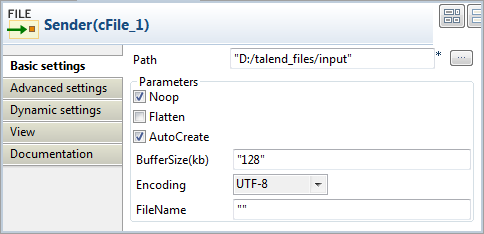
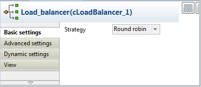
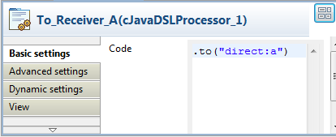
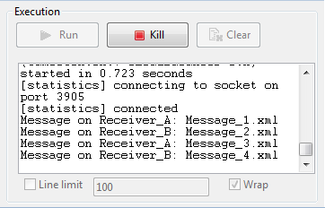

Component Family | Routing | |
Function | cLoadBalancer allows you to distribute messages across multiple endpoints using different load balancing strategies. | |
Purpose | cLoadBalancer allows you to distribute messages among several endpoints using a variety of load balancing strategies. | |
Basic settings | Strategy | Select between Random, Round Robin, Sticky, Topic, Failover, and Custom. Each method is described below. |
Random | The receiving endpoint is chosen randomly at each exchange. | |
Round Robin | Messages are distributed according to the round robin method which distributes the load evenly. | |
Sticky | Language | Select the language of the expression to use in the Expression field to distribute the messages. |
| Expression | Type in the expression that will be used to calculate a correlation key that will determine the endpoint to choose. |
Topic | Select this option to send all the messages to all the endpoints. | |
Failover | Basic mode | By default, the failover load balancing always sends the messages to the first endpoint. If the first endpoint fails, the messages are sent to subsequent endpoints. |
| Specify exceptions | Specify the exceptions to which the failover should react to in the Exception table. |
| Use with Round robin | Select this option to use failover with advanced options. From the Maximum failover attempt list, select the number of attempt to be proceed before giving up the transfer: -Attempt forever: always attempts to transfer the messages and always try to failover. -Never failover: gives up immediately the transfer of messages and never try to failover. -A number of attempts: attempts n number of time to transfer messages, specify that number in the Number of attempts field. Inherit error handler: Select true if you want Camel error handler to be used. If you select false, the load balancer will immediately failover when an exception is thrown. Use Round robin: Select true if you want to combine failover with round robin. Failover load balancing with round robin mode distributes the load evenly between the services, and it provides automatic failover. |
Custom | Load balancer | Type in the name of your custom load balancer. |
Usage | cLoadBalancer is used as a middle component in a Route. | |
| Connections | Load Balance | Select this link to route messages to the next endpoint according to the selected load-balancing strategy. |
| Route | Select this link to route all the messages from the sender to the next endpoint. | |
Limitation | n/a | |
In this scenario, a cLoadBalancer component is used to distribute four messages evenly to two receiving endpoints in accordance with the round robin load balancing method.
This scenario requires one cFile component as the message sender, one cLoadBalancer component to distribute the messages to two different receivers in a load balancing manner, two cJavaDSLProcessor components to define the URIs of the receivers, two cMessagingEndpoint components to retrieve the messages routed to the two receivers, and two cProcessor components to display the effect of round robin load balancing.

From the Messaging folder of the Palette, drop one cFile component and two cMessagingEndpoint components onto the workspace, and label them according to their roles in the Route: Sender, Receiver_A, and Receiver_B respectively.
From the Routing folder, drop a cLoadBalancer component onto the design workspace, and label it Load_balancer.
From the Processor folder, drop two cJavaDSLProcessor components and two cProcessor components onto the design workspace, and label them according to their roles in the Route: To_Receiver_A, To_Receiver_B, Monitor_A, and Monitor_B respectively.
Link the cFile component to the cLoadBalancer component using a Row > Route connection.
Link cLoadBalancer to each of the two cJavaDSLProcessor components using a Row > Load Balance connection.
Link each of the two cMessagingEndpoint components to the corresponding cProcessor component using a Row > Route connection.
Double-click the cFile component to open its Basic Settings view in the Component tab.
In the Path field, specify the file path to message source.
From the Encoding list, select the encoding type of your message files. Leave the other parameters as they are.
Double-click the cLoadBalancer component to open its Basic Settings view in the Component tab, and select the load balancing method you want to use from the Strategy list. In this scenario, we use the default Round robin method.
Double-click the cJavaDSLProcessor component labeled To_Receiver_A to open its Basic Settings view in the Component tab, and enter URI of the first receiver between the double quotation marks in the Code area,
direct:ain this example.Repeat this step to define the URI of the other receiver,
direct:b, in the cJavaDSLProcessor component labeled To_Receiver_B.Double-click the cMessagingEndpoint component labeled Receiver_A to open its Basic Settings view in the Component tab, and enter URI of the first receiver between the double quotation marks in the URI field,
direct:ain this example.
Repeat this step to define the URI of the other receiver,
direct:b, in the cMessagingEndpoint component labeled Receiver_B.Double-click the cProcessor component labeled Monitor_A to open its Basic Settings view in the Component tab, and customize the code in the Code area to display the file names of the messages routed to Receiver_A on the console:
System.out.println("Message on Receiver_A: "+ exchange.getIn().getHeader("CamelFileName"));Repeat this step to customize the code in the cProcessor component labeled Monitor_B to display the file names of the messages routed to Receiver_B on the console.
Press Ctrl+S to save your Route.
Click the Code tab at the bottom of the design workspace to check the generated code:

As shown above, while messages are routed
fromthe source endpoint.tothe destination endpoints, routing load balancing is implemented according to the.roundRobin()method bycLoadBalancer_1.Press F6 to run your Route.
RESULT: Of the four messages from the sender, two are routed to Receiver_A and two are routed to Receiver_B in a round robin manner.
